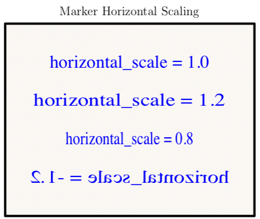
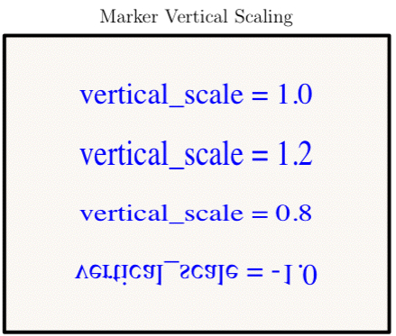
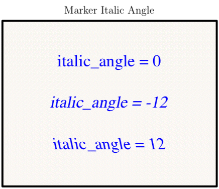
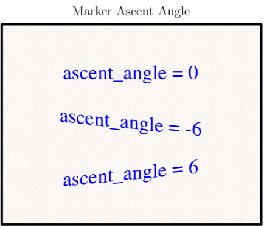
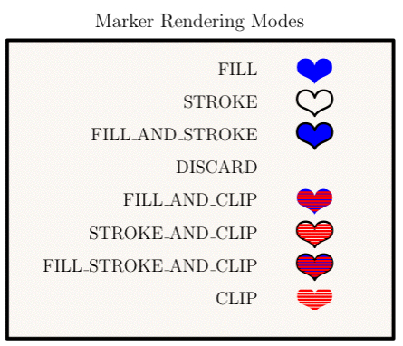
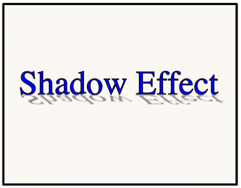

class Tioga::Markers
These are the methods for using text as markers in PDF graphics. See also the predefined markers in #MarkerConstants.
Public Instance Methods
This dictionary holds defaults for show_marker.
# File lib/Tioga/Markers.rb, line 131 def marker_defaults end
Returns an array with [width, dx_left, dy_down, dx_right, dy_up] given in figure coordinates. The first is the width in figure x coordinates, the remainder is the bounding box relative to the reference point for showing the string.
# File lib/Tioga/Markers.rb, line 123 def marker_string_info(font_number, string, scale) end
This routine takes care of text that is being used as a graphical element and consequently is going straight to PDF rather than to TeX for normal typesetting (see show_text).
The most common use of markers is probably to mark points on plots (hence the name). The ZapfDingbats font provides a useful collection for this purpose, and several glyphs from it are provided as predefined markers (see #MarkerConstants). A marker of this sort is represented either by an array of [ font_number, character_code ] for filled markers, or by an array holding [ font_number, character_code, line_width ] for stroked markers. Often the same character can be used both for a filled marker and for an open one. For example, the predefined markers include Box and Circle (filled) as well as the same glyphs as BoxOpen and CircleOpen (stroked).
For the primary purpose of marking points on plots, we could stop with just single characters taken from ZapfDingbats. However, for not much more effort, we can broaden this to allow strings of characters and fonts other than the dingbats. But the usefulness of this is limited given that typesetting is properly done using TeX, and the problems of dealing with fonts in general are notoriously awful. So the compromise is to allow markers using any of the 14 standard Adobe PDF fonts which are guaranteed to be supported by all PDF viewers and to toss in for good measure some Computer Modern fonts which are likely to be around since they come with TeX. These fonts are predefined in the FigureConstants module. Any character (or string of characters) from any of these fonts can be used as a marker.
Because markers are sent to PDF rather than TeX, they are limited typographically but powerful graphically. In addition to specifying color, scale, and rotation, as you can for TeX text, you can also stretch the characters either along the baseline ('horizontal_scale') or perpendicular to it ('vertical_scale'). You can slant the individual characters ('italic_angle') or shift the baseline along the text ('ascent_angle'). Finally, you can specify the 'rendering_mode' for the marker to be any combination of fill, stroke, and clip. (So for next Valentine's Day you can take a Heart marker, scale it up, and use it to clip a JPEG image of yourself to send to your sweetheart.)
Defaults for many of the entries come from the #marker_defaults dictionary.
Dictionary Entries
'marker' => a_marker # a marker definition array 'x' => a_float # x location for marker reference point 'y' => a_float # y location for marker reference point 'at' => [ x, y ] # location for marker reference point 'point' # alias for 'at' 'Xs' => a_Dvector # x locations for marker reference points 'Ys' => a_Dvector # y locations for marker reference points 'xs' # alias for 'Xs' 'ys' # alias for 'Ys' 'font' => an_integer # one of the predefined font numbers 'string' => a_string # to be shown as a marker 'text' # alias for 'string' 'fill_color' => a_color # to be used for filled markers 'stroke_color' => a_color # to be used for stroked markers 'color' => a_color # default for fill_color and stroke_color 'angle' => a_float # degrees to rotate marker 'scale' => a_float # factor for rescaling marker size 'horizontal_scale' => a_float # for scaling along baseline 'vertical_scale' => a_float # for scaling vertical to baseline 'italic_angle' => a_float # for slanting text relative to baseline 'ascent_angle' => a_float # factor for slanting baseline 'alignment' => an_alignment # see alignment 'justification' => a_justification # see justification 'rendering_mode' => a_rendering_mode # see below 'stroke_width' => a_float # to be used for stroked markers 'mode' # alias for 'rendering_mode' 'legend' => a_dict or a_string # for adding marker to legend
You can provide a list of markers as the value of the 'marker' entry in the dictionary. In this case, the #show_marker routine will go through the list of markers using one per point. If there are more points than markers, it will cycle through the list of markers repeatedly. Similarly, you can provide a list of colors for 'color', 'fill_color', or 'stroke_color', and a list of numbers for 'font', 'angle', 'scale', 'horizontal_scale', 'vertical_scale', 'italic_angle', 'ascent_angle', or 'stroke_width'.
Examples





def marker_shadow_effect t.landscape background scale = 2.6 t.line_width = 0.6 x = t.bounds_xmin + 0.5 * t.bounds_width dy = -0.5; y = 1 + dy; t.show_marker( 'string' => 'Shadow Effect', 'scale' => scale, 'point' => [x, y], 'mode' => FILL_AND_STROKE, 'alignment' => ALIGNED_AT_BASELINE, 'fill_color' => Blue, 'stroke_color' => Black) t.fill_opacity = 0.8 t.show_marker( 'string' => 'Shadow Effect', 'vertical_scale' => -0.4, 'fill_color' => Grey, 'italic_angle' => -30, 'scale' => scale, 'point' => [x+0.022, y-0.03]) end

# File lib/Tioga/Markers.rb, line 117 def show_marker(dict) end